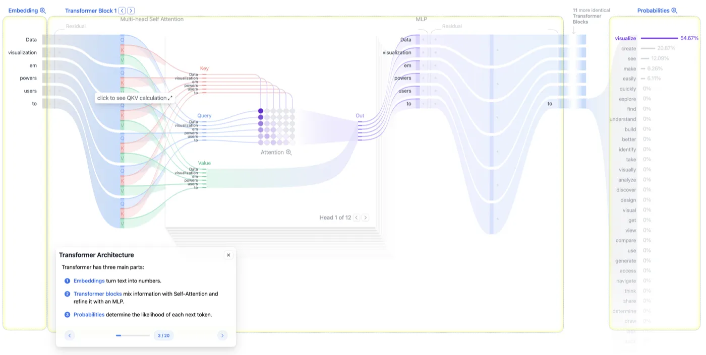
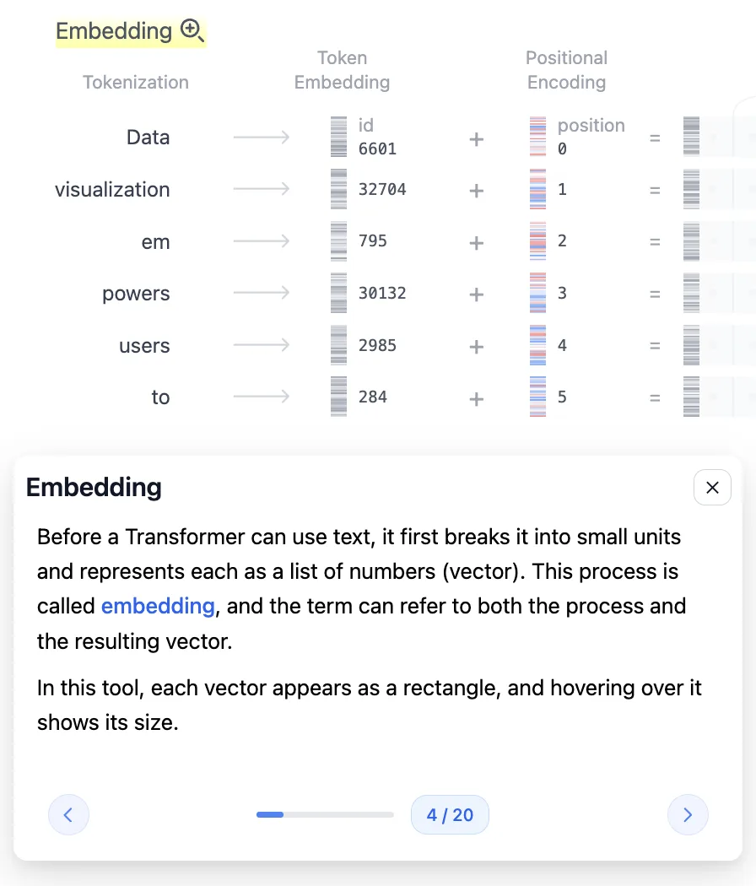
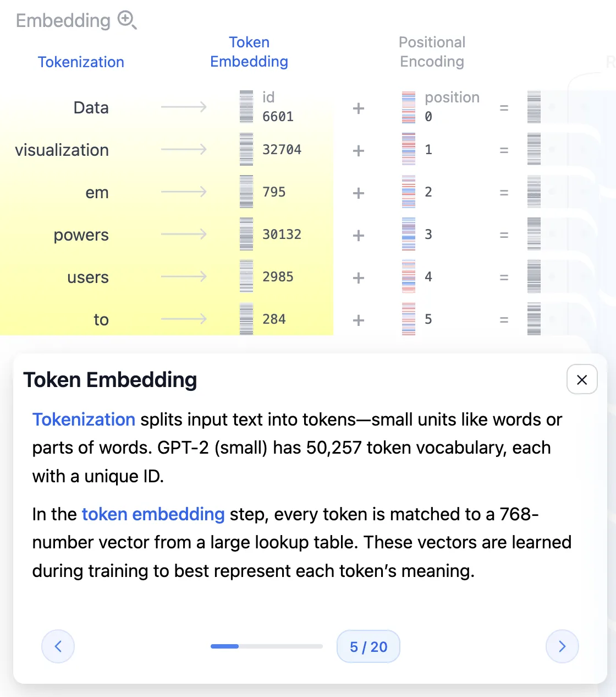
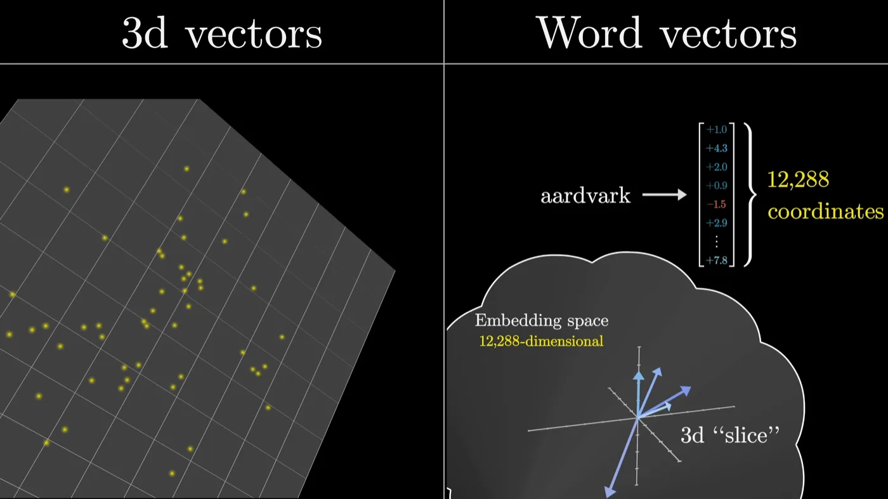
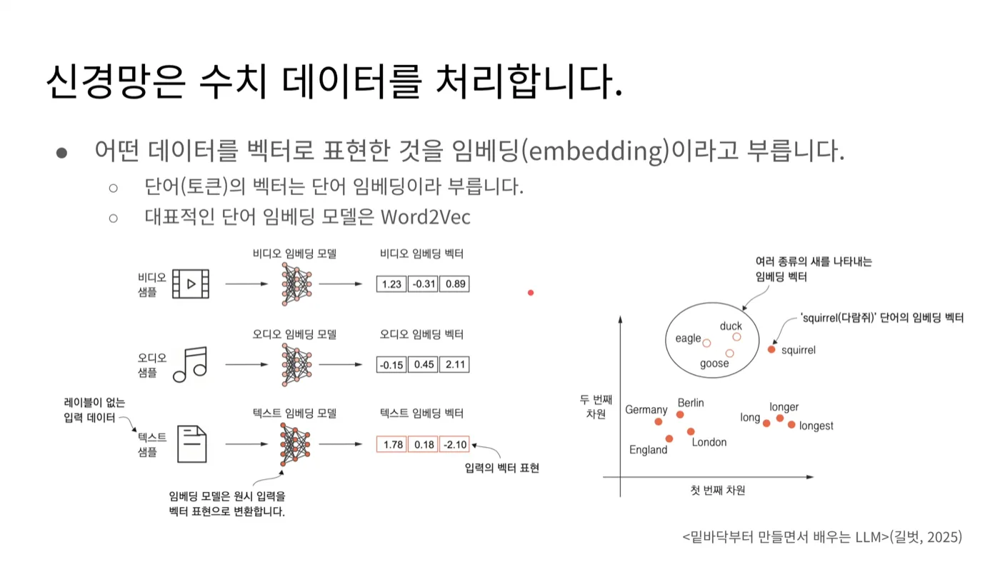
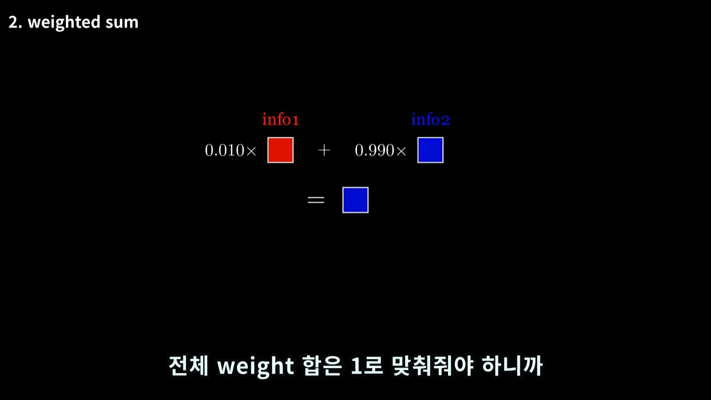
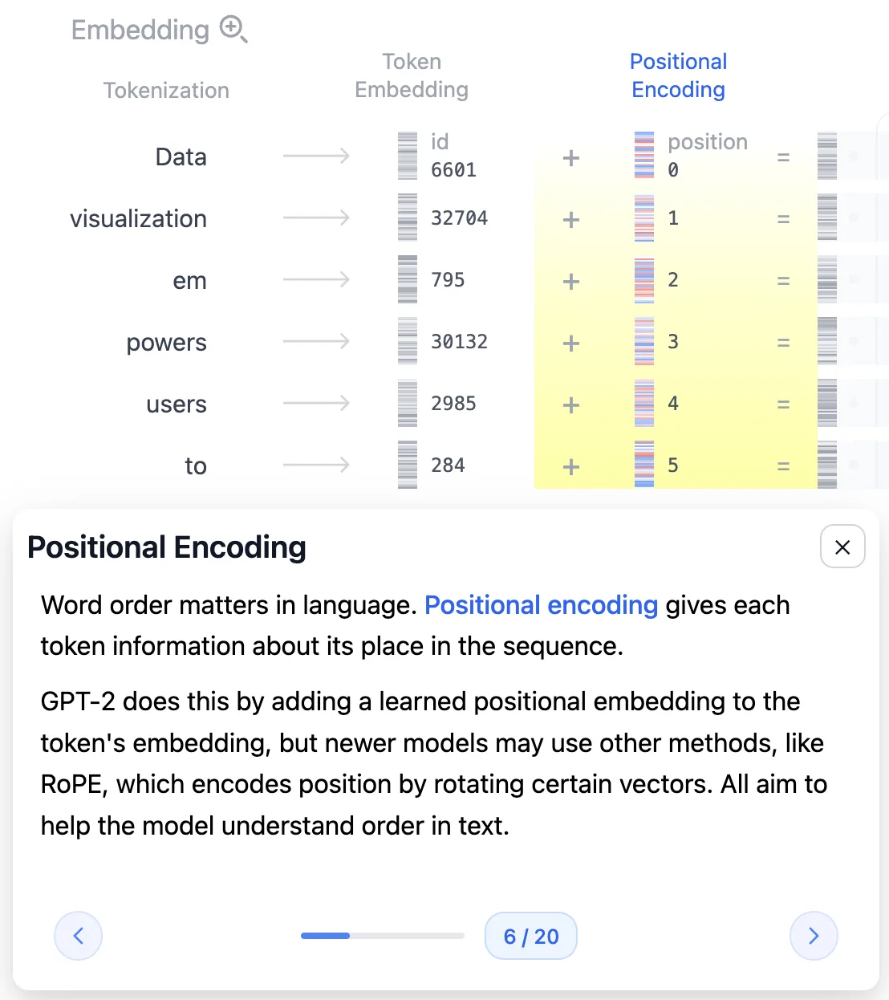
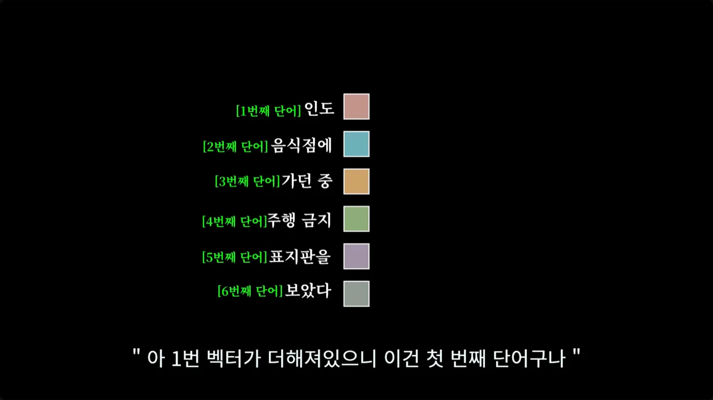

llm
1편. 텍스트가 벡터가 되기까지 - 토큰화와 임베딩
GPT-2가 입력 문장을 어떻게 숫자로 바꾸는지, 토큰화부터 768차원 임베딩과 위치 인코딩까지 따라갑니다
2026.08.09 · 19 min read
LLM에게 Data visualization empowers users to라는 문장을 넣으면 다음 단어를 예측해 줍니다. 그런데 모델 입장에서 이건 글자가 아닙니다. 모델이 보고 다룰 수 있는 일은 행렬곱과 덧셈뿐이고, 그 재료는 숫자여야만 합니다.
이 글은 문장이 모델이 계산할 수 있는 숫자가 되기까지를 따라갑니다. 트랜스포머 아키텍처에서 맨 앞 한 칸, Embedding이라고 적힌 부분입니다. 별거 아닌 전처리처럼 보이지만, 여기서 정해지는 숫자 몇 개가 뒤에 오는 모든 계산의 모양과 GPU 메모리 사용량까지 결정합니다.
이 시리즈는 Transformer Explainer를 화면에 띄워놓고 각 단계를 직접 눌러보면서 정리한 내용입니다. 별다른 언급이 없으면 GPT-2 small 모델 기준입니다.
1부. 트랜스포머와 GPT 개요
1.1 트랜스포머가 등장한 이유
트랜스포머는 2017년 구글이 발표한 Attention is All You Need 논문에서 나왔습니다. 원래의 목적은 LLM 등이 아닌 기계 번역이었습니다. 그래서 트랜스포머의 아키텍처와 동작방식을 이해할 때, 본질이 번역이라는 것을 생각하면 이해를 도울 수 있습니다.
트랜스포머 전까지 번역 모델은 이런 조합이었습니다.
- RNN(Recurrent Neural Network) - 단어를 앞에서부터 하나씩 순서대로 읽으며 상태를 갱신
- 어텐션 - 그 위에 얹어서 "어느 단어를 볼지" 고르는 보조 장치
RNN 방식에는 구조적인 약점이 둘 있었습니다.
첫째, 순차 처리라 병렬화가 안 됩니다. 3번째 단어를 계산하려면 2번째 계산이 끝나야 합니다. GPU는 수천 개 연산을 동시에 굴리는 장비인데, 이 구조에서는 그 능력을 거의 못 씁니다.
둘째, 앞쪽 문맥을 까먹습니다. RNN은 지금까지 읽은 내용을 하나의 은닉 상태(hidden state)에 눌러 담습니다. 문장이 길어지면 초반 정보가 희석되죠. 어텐션이 나온 이유가 바로 이것으로, 디코더가 마지막 은닉 상태 하나만 보는 대신 인코더의 모든 은닉 상태를 참조하게 만든 겁니다. 다만 이러면 모든 상태를 보관해야 해서 메모리를 많이 쓰고, 그래서 입력 길이에 제한이 생깁니다. 그래서 ChatGPT 등에서 컨텍스트 윈도우 (입력 토큰 제한)이 있던 겁니다.
이를 극복하고자, RNN을 떼어내고 어텐션만 남겼습니다. 그래서 논문의 이름도 Attention is All You Need 이고요. 순차 의존이 사라지니 입력 토큰을 전부 동시에 처리할 수 있고, 덕분에 병렬 처리를 할 수 있었습니다. 오늘날 LLM이 GPU 위에서 굴러가는 근본 이유가 여기 있습니다.
1.2 GPT - 디코더 전용 트랜스포머
원 논문의 트랜스포머는 번역기라서 인코더와 디코더를 둘 다 가지고 있었습니다. 입력 언어를 인코더가 읽고, 디코더가 출력 언어를 만드는 구조죠.
지금의 LLM은 대부분 디코더만 씁니다. GPT라는 이름 자체가 그 성격을 담고 있습니다.
- Generative - 생성한다
- Pre-trained - 미리 학습된
- Transformer - 트랜스포머 구조다
학습은 크게 두 단계입니다.
- 사전 훈련(Pre-training) : 방대한 텍스트를 받아 다음 토큰을 예측하는 훈련을 반복합니다. 정답 레이블을 사람이 붙일 필요가 없어서 데이터를 무한정 밀어 넣을 수 있습니다.
- 지시 미세튜닝(Instruction Fine-tuning) : 사전 훈련만 마친 모델은 문장을 이어 쓸 뿐 지시를 따르지 않습니다. "요약해줘"에 응답하는 능력은 이 단계에서 생깁니다.
이 글에서 다루는 추론 과정은 두 단계를 모두 마친 모델이 입력을 받아 다음 토큰 하나를 뱉는 과정입니다.
1.3 이 글의 범위 - Embedding 한 칸

오른쪽 확률 목록을 보면 visualize가 54.67%로 1등입니다. 이게 모델이 예측한 다음 단어입니다. 그리고 그 단어를 예측하기 까지, 맨 왼쪽에서 문장이 숫자로 바뀌는 일이 먼저 일어나야 합니다.
Embedding 칸을 확대하면 다시 세 단계로 나뉩니다.

2부. 문장을 조각내기 - 토큰화
2.1 토큰 - 단어가 아닌 최소 단위
첫 단계는 입력 텍스트를 작은 조각으로 나누는 것입니다. 이 조각 하나하나를 입력 토큰(Input Token) 이라고 부릅니다.
여기서 거의 모두가 한 번은 겪는 오해가 있습니다. 토큰은 단어가 아닙니다. 위 그림이 그 증거입니다. 예문은 5개 단어인데 토큰은 6개입니다.
Data | visualization | em | powers | users | to
^^^^^^^^^^^
empowers 가 둘로 쪼개짐
empowers가 em + powers로 갈라졌습니다. 나누는 기준이 단어 하나가 아니기 때문입니다.
- 나누는 단위 - 단어, 부분단어, 공백, 특수문자를 모두 포함
- 자주 쓰이는 단어 - 통째로 한 토큰
- 드물거나 긴 단어 - 여러 조각으로 쪼개짐
토큰이라는 개념이 텍스트 전용도 아닙니다.
- 이미지 - 이미지의 작은 조각
- 음성 - 음성의 짧은 구간
"모델이 한 번에 다루는 최소 단위" 라는 뜻이라고 보면 됩니다.
2.2 부분단어(BPE)를 쓰는 이유
empowers를 굳이 둘로 왜 쪼갤까요? 양극의 케이스를 생각해보면 이해가 가능합니다.
단어 단위로 자른다면 사전이 끝없이 커집니다. 영어 단어만 수십만 개인데, 여기에 고유명사·오타·신조어까지 들어옵니다. 게다가 사전에 없는 단어(OOV, Out-Of-Vocabulary)를 만나면 모델이 아무것도 못 합니다. empowers가 사전에 없으면 그냥 미지의 기호가 됩니다.
글자 단위로 자른다면 사전은 아주 작아집니다(알파벳 몇십 개). 대신 시퀀스가 지독하게 길어집니다. 짧은 문장 하나가 토큰 수백 개가 되고, 뒤에서 볼 어텐션 계산량은 토큰 수의 제곱에 비례하니 감당이 안 됩니다.
부분단어(subword)는 이 두 케이스의 중간 지점입니다.
- 자주 나오는 단어는 통째로 한 토큰이라 시퀀스가 짧게 유지된다.
- 드문 단어는 아는 조각들의 조합으로 표현되니 모르는 단어가 원천적으로 없다.
- 사전 크기를 원하는 수준(GPT-2는 5만 개 남짓)에서 고정할 수 있다.
GPT-2는 이 방식으로 바이트 수준 BPE(Byte-level Byte Pair Encoding) 를 씁니다. 자주 붙어 다니는 바이트 쌍을 반복해서 병합해 사전을 만드는 방식입니다. em과 powers가 각각 자주 등장하는 조각이라 그 둘로 갈라진 거고요.
이 성질은 실무에서도 바로 체감됩니다. 한국어는 영어보다 토큰이 훨씬 잘게 쪼개져서, 같은 의미의 문장이라도 토큰 수가 몇 배로 늘어납니다. API 요금과 컨텍스트 한도가 토큰 단위로 매겨지니, 언어에 따라 실질 비용이 달라지는 셈입니다.
2.3 vocab과 Token ID - 50,257개
나눈 조각들은 아직 문자입니다. 여기에 숫자를 붙여야 하는데, 아무 숫자나 붙이는 게 아니라 모델이 이미 가지고 있는 단어 사전(vocab, vocabulary) 을 찾아봅니다.

GPT-2 (small) has 50,257 token vocabulary라고 적혀 있습니다. (출처: Transformer Explainer)GPT-2 small의 vocab 크기는 50,257개입니다.
vocab은 모델을 학습시키기 전에 "우리는 이 5만 개 조각만 쓰겠다"고 정해둔 목록이고, 각 조각에는 고유한 번호인 Token ID가 매겨져 있습니다.
예문의 토큰들은 이런 번호를 받습니다.
Data → 6601 visualization → 32704 em → 795
powers → 30132 users → 2985 to → 284
참고로, 이 사전(vocab)은 학습보다 먼저 정해집니다. 모델이 학습하다가 새 단어를 발견해서 사전에 추가하는 게 아니라, 사전을 확정한 다음 그 안에서만 학습합니다. 그래서 학습이 끝난 모델의 vocab은 바꿀 수 없고, 바꾸려면 처음부터 다시 학습해야 합니다.
2.4 Context Size - 1,024 토큰
토큰을 무한정 넣을 수는 없습니다. 모델이 한 번에 처리할 수 있는 토큰 개수를 컨텍스트 크기(Context Size) 라고 합니다.
- GPT-2 small - 1,024 토큰
- GPT-3 - 2,048 토큰
요즘 모델들이 수십만 토큰을 광고하는 것과 비교하면 초라해 보이지만, 이 숫자가 왜 존재하는지가 중요합니다. 위에사 본 것처럼 어텐션은 모든 토큰이 모든 토큰을 참조합니다. 토큰이 n개면 참조 관계는 n²개죠. 토큰 수를 2배로 늘리면 계산량과 메모리는 4배가 됩니다.
컨텍스트 한도는 그래서 "설계상의 상한"이 아니라 메모리와 계산량이 감당 가능한 선입니다.
3부. 임베딩 - 조각을 벡터로
3.1 Token ID를 그대로 쓰면 안 되는 이유
토큰마다 번호가 붙었으니, 그 번호를 그대로 신경망에 넣으면 안 될까요? 안 됩니다. 그리고 이유가 이 글에서 제일 중요한 대목입니다.
Token ID는 사전에서의 순번일 뿐, 크기에 아무 의미가 없습니다.
예문에서 em은 795번, to는 284번입니다. 번호가 500 정도 차이 나는데, 그렇다고 두 토큰의 의미가 500만큼 다른 게 아닙니다. 반대로 번호가 1 차이 나는 두 토큰이 전혀 무관할 수도 있습니다. 사전을 만들 때 정해진 순서일 뿐이니까요.
그런데 신경망은 들어온 숫자를 크기와 거리가 의미 있는 값으로 취급합니다. 그대로 넣으면 모델은 "795와 284는 511만큼 떨어져 있다"는 존재하지 않는 관계를 학습하려 듭니다. 완전히 틀린 신호죠.
그래서 각 Token ID를 의미를 담은 벡터로 바꿔줍니다. 이 과정이 임베딩(Embedding) 입니다. 무의미한 일련번호를, 거리와 방향이 의미를 갖는 좌표로 옮기는 작업이라고 보면 정확합니다.
3.2 임베딩 행렬
변환은 임베딩 행렬(Embedding Matrix) 이 담당합니다.
- vocab의 각 단어마다 열을 하나씩 가지고 있습니다.
- 그 열이 곧 단어와 매칭되는 벡터 값이다.
- 처음에는 랜덤한 값이었다가 학습을 거치면서 값이 정해진다.
동작 자체는 계산이 아니라 조회(lookup) 입니다. em이 795번이면 임베딩 행렬의 795번째 열을 꺼내오면 끝입니다. 곱셈도 덧셈도 없습니다.
여기서 중요한 사실 하나. 이 행렬은 사람이 설계한 사전이 아닙니다. 학습으로 얻은 결과물입니다. 처음에는 무작위 숫자였다가, 다음 토큰을 예측하는 훈련을 수없이 반복하는 동안 "이 단어는 이런 좌표에 있어야 예측이 잘 되더라"는 방향으로 값이 조정된 것입니다.
3.3 임베딩 차원 768 - 파라미터 3,860만
GPT-2 small의 임베딩 차원은 768입니다. 토큰 하나가 768개의 숫자로 된 벡터가 됩니다.
이 숫자가 얼마나 큰 건지 계산해보면 감이 옵니다.
임베딩 행렬 크기 = vocab × 임베딩 차원
= 50,257 × 768
= 38,597,376 (약 3,860만 개)
GPT-2 small의 전체 파라미터가 약 1억 2,400만 개니, 임베딩 행렬 하나가 모델 전체의 30%쯤을 차지합니다. "텍스트를 숫자로 바꾸는 전처리" 정도로 생각했던 부분이 실은 모델에서 가장 덩치 큰 부품 중 하나인 셈입니다.

차원이 크다는 건 표현할 수 있는 의미의 종류가 많다는 뜻입니다. 3차원 공간에서는 점들이 금방 빽빽해지지만, 768차원에서는 수만 개 단어를 서로 구별되게 배치할 공간이 충분합니다.
3.4 벡터 공간의 구조 - 거리와 방향

duck·eagle·goose는 한데 뭉치고 squirrel은 떨어져 있습니다. long → longer → longest가 한 방향으로 늘어선 것도 보입니다. (출처: 박해선, 밑바닥부터 만들면서 배우는 LLM 2.1)그래프에서 두 가지가 동시에 보입니다.
- 의미가 비슷한 단어는 가까이 모인다
duck,eagle,goose가 한 덩어리를 이루고squirrel은 떨어져 있습니다.- 새라는 범주가 공간상의 거리로 나타난 겁니다.
- 특정 방향이 특정 의미를 담는다
long → longer → longest가 한 방향으로 줄지어 있습니다.- 이 방향이 "비교급·최상급"이라는 문법적 의미를 갖는다고 생각할 수 있습니다
Germany-Berlin과England-London쌍이 비슷한 관계로 놓인 것도 같은 현상입니다.
방향에 의미가 실린다는 성질 덕분에 벡터 뺄셈과 덧셈으로 의미를 조작할 수 있습니다.
왕 - 남자 + 여자 ≈ 여왕,수도방향 벡터를 나라 벡터에 더하면 그 나라의 수도 근처로 가는 등의 예시가 있습니다.
참고로 데이터를 벡터로 표현한 것 전부가 임베딩이고, 그중 단어를 벡터로 만든 것이 단어 임베딩이라 합니다. 대표적인 단어 임베딩 모델로 word2vec이 있습니다. 위 그림 왼쪽처럼 비디오나 오디오도 같은 방식으로 벡터가 됩니다.
3.5 768을 바꿀 수 없는 이유
임베딩 차원은 모델을 개발하는 단계에서 미리 정해두는 값이고, 학습이 끝난 뒤에는 바꿀 수 없습니다. 이런 값을 하이퍼파라미터(Hyper-parameter) 라고 합니다.
바꿀 수 없는 이유는 간단합니다.
- 임베딩 차원이 768이면 그 뒤에 오는 가중치 행렬들도 전부 768에 맞춰 만들어져 있다
- 여기만 1024로 바꾸면 뒤쪽 행렬곱의 모양이 전부 어긋난다
- 즉 모델 구조 전체가 이 숫자 위에 세워져 있다
이건 서빙 관점에서도 곧바로 의미가 있습니다. 뒤에서 다룰 KV Cache의 크기가 이 숫자에 정비례합니다.
KV Cache 크기 ∝ 레이어 수 × 토큰 수 × 임베딩 차원 × 2(K와 V)
임베딩 차원이 2배면 캐시도 2배입니다. 그래서 "이 모델을 이 GPU에 몇 명이나 동시에 붙일 수 있나"라는 아주 현실적인 질문이 결국 이 숫자에서부터 시작합니다.
4부. 텐서의 세 가지 성질
여기까지가 "텍스트 → 벡터"입니다. 마지막 단계로 넘어가기 전에, 벡터(텐서)로 할 수 있는 연산 세 가지를 짚고 가겠습니다.
4.1 텐서 성질 1 - 통과해도 정보는 남는다
정보를 담은 텐서를 가중치 행렬(Weight Matrix)과 곱해도, 계산 전에 갖고 있던 정보가 사라지지 않습니다.
- 행렬곱은 정보를 변형할 뿐 삭제하지 않는다
- 그래서 같은 벡터를 블록 12개에 걸쳐 수십 번 통과시킬 수 있다
왜 중요한가 - 통과할 때마다 정보가 날아간다면 층을 쌓는 것 자체가 불가능합니다. 트랜스포머가 "블록을 여러 개 쌓는다"는 전략을 쓸 수 있는 전제가 이 성질입니다.
4.2 텐서 성질 2 - 가중합은 정보를 섞는다
두 텐서를 가중합(Weighted Sum) 하면 두 텐서의 정보가 혼합됩니다. 가중치가 양수이고 전체 합이 1인 경우를 보겠습니다.

0.010 : 0.990으로 섞으면 결과는 거의 파란 정보입니다. (출처: 임커밋, Attention/Transformer 시각화 01:12)- 가중치가 큰 쪽의 정보를 더 많이 갖게 된다
- 합이 1로 고정이니 한쪽이 커지면 나머지는 자동으로 작아진다
- 텐서 2개가 아니라 3개, 4개, 그 이상이어도 똑같이 성립한다
왜 중요한가 - 이게 나중에 어텐션의 출력 그 자체가 됩니다. "어떤 단어의 정보를 얼마나 가져올지"를 가중치로 조절해서 섞는 거니까요. 그리고 "합이 1"이라는 조건 때문에, 어텐션에서 Softmax가 등장합니다.
4.3 텐서 성질 3 - 내적은 관련도를 잰다
벡터 두 개를 놓고 같은 차원 숫자끼리 곱해서 전부 더하면 내적(Inner Product) 이 됩니다.
- 서로 관련 있는 벡터끼리 내적하면 값이 크다
- 관련 없는 벡터끼리는 값이 작거나 음수가 된다
3.4절과 이어서 보면 자연스럽습니다. 의미가 비슷한 단어는 벡터 공간에서 같은 방향을 향하고 있고, 같은 방향인 두 벡터를 내적하면 값이 커지니까요. 반대로 방향이 반대면 음수가 됩니다.
왜 중요한가 - 이게 어텐션에서 가중치를 구하는 방법입니다. 두 단어가 얼마나 관련 있는지를 재는 자가 필요한데, 그 자가 내적입니다.
4.4 세 성질이 만드는 어텐션
셋을 이어붙이면 어텐션의 뼈대가 나옵니다.
내적으로 단어 간 관련도를 잰다 (성질 3)
↓
그 관련도를 가중치 삼아 정보를 섞는다 (성질 2)
↓
섞은 뒤에도 원래 정보는 남아 있다 (성질 1)
↓
이걸 블록 12개에 걸쳐 반복한다
5부. Positional Encoding - 순서 심기
5.1 내적은 순서를 보지 못한다
여기까지 하면 각 토큰이 768차원 벡터가 됐습니다. 그런데 문제가 하나 남아 있습니다.
임베딩을 거친 벡터는 "이 토큰이 무슨 뜻인가"만 담고 있고, "문장에서 몇 번째였나"는 담고 있지 않습니다.
직관적으로는 "개가 사람을 물었다"와 "사람이 개를 물었다"가 토큰 집합은 같은데 뜻이 정반대인 상황을 떠올리면 됩니다. 그런데 진짜 이유는 좀 더 구조적입니다. 바로 앞 4.3절 때문입니다.
인도 음식점에 가던 중 주행 금지 표지판을 보았다라는 문장에서 인도의 벡터를 다른 단어와 내적한다고 해봅시다. 내적은 두 벡터의 숫자만 가지고 계산합니다. 그 계산을 지금 하든 나중에 하든, 첫 번째 단어와 하든 다섯 번째 단어와 하든, 같은 벡터끼리면 값은 똑같습니다.
"인도가 첫 번째 단어였다"는 정보는 내적 계산에 아예 들어가지 않습니다.
그리고 어텐션은 이 내적 위에 세워져 있죠. 즉 어텐션은 태생적으로 순서를 인지할 수 없습니다. 순차적으로 읽는 RNN을 버리고 병렬 처리를 얻은 대가이기도 합니다.
순서 정보가 어딘가에 따로 보관되는 게 아니라면, 방법은 하나뿐입니다. 벡터 자체에 위치를 심어 넣는 것. 이게 Positional Encoding입니다.
5.2 위치 벡터 더하기 - 포스트잇 비유

동작은 위치 표시용 포스트잇이라고 생각하면 쉽습니다.
- 문장의 첫 번째 단어 벡터에는 항상 1번 포스트잇 벡터를 더한다
- 두 번째 단어 벡터에는 항상 2번 포스트잇 벡터를 더한다
- 위치마다 정해진 벡터를 더한다는 규칙이 전부다

이제 같은 단어라도 문장의 어느 자리에 있느냐에 따라 조금씩 다른 벡터가 됩니다. 내적 결과도 자리에 따라 달라지고요. 이를 활용해서 순서를 알 수 있습니다.
5.3 더하기 vs 이어붙이기
그런데, 위치 정보를 왜 더할까요? 뒤에 이어붙이면(concatenate) 깔끔한데요.
이어붙이면 벡터 차원이 늘어납니다. 만약 768차원 뒤에 위치 벡터를 붙여 800차원이 되면, 3.5절에서 봤듯 뒤에 오는 모든 가중치 행렬이 800에 맞춰 커져야 합니다. 파라미터가 늘고 계산량이 늘죠. 더하기를 쓰면 768을 그대로 유지한 채 정보만 실을 수 있습니다.
"더하면 원래 의미가 오염되지 않나?"라는 의심이 들 수 있는데, 768차원은 생각보다 넓습니다. 모델은 학습 과정에서 의미 정보와 위치 정보가 서로 덜 간섭하도록 자리를 잡는다고 합니다.
GPT-2가 쓰는 방식을 정리하면 이렇습니다.
- 학습된 위치 임베딩을 토큰 임베딩에 더한다
- 벡터 차원은 768 그대로
- 이 덧셈은 트랜스포머 블록에 들어가기 전, 맨 처음에 한 번만 이뤄진다
위치 임베딩도 학습 대상이라 별도 행렬을 갖습니다. GPT-2 small은 컨텍스트가 1,024이므로 1,024 × 768 ≈ 78만 개 파라미터죠. 임베딩 행렬(3,860만)에 비하면 작습니다.
5.4 남는 문제 - 맥락
위치를 심었으니 이제 순서는 압니다. 하지만 아직 맥락은 모릅니다.
아까 그 문장의 인도를 봅시다.
- 뒤에
음식점이 오면 → 나라 India - 뒤에
주행 금지 표지판이 오면 → 보도블록 인도
같은 단어, 같은 위치인데 뜻이 갈립니다. 그런데 지금까지 만든 벡터는 문장이 뭐였든 인도면 항상 같은 벡터입니다. 임베딩 행렬에서 조회한 값에 위치 벡터를 더한 것뿐이니까요.
내적과 위치 정보만으로는 이걸 판단할 수 없습니다. 주변 단어를 실제로 들여다보고, 그 정보를 자기 벡터에 반영해야 합니다.
그래서 셀프 어텐션이 필요합니다. 2편의 주제입니다.
전체 흐름 정리
"Data visualization empowers users to"
↓ 토큰화 (byte-level BPE)
[Data][visualization][em][powers][users][to] 6개 토큰
↓ vocab 조회 (50,257개)
[6601][32704][795][30132][2985][284]
↓ 임베딩 행렬 조회 (50,257 × 768)
6개의 768차원 벡터
↓ + Positional Encoding (위치 0~5)
6개의 768차원 벡터 (순서 정보 포함)
↓
트랜스포머 블록으로 → (2편에서 계속)
한 줄로 줄이면 이렇습니다. 문장을 조각내고, 조각마다 번호를 붙이고, 번호로 의미 좌표를 찾아온 뒤, 거기에 자리표를 더한다.
기억할 숫자 세 개도 정리해 둡니다.
| 숫자 | 뜻 | 왜 중요한가 |
|---|---|---|
| 50,257 | vocab 크기 | 학습 전에 확정, 이후 변경 불가 |
| 768 | 임베딩 차원 | 뒤의 모든 행렬 모양과 KV Cache 크기를 결정 |
| 1,024 | 컨텍스트 크기 | 어텐션 계산량이 토큰 수의 제곱이라 생기는 한도 |
막혔던 곳
위치 정보를 왜 더하지? 이어붙이면 안 되나? 이어붙이면 벡터 차원이 늘어나고, 그러면 뒤쪽 가중치 행렬 크기가 전부 커집니다. 더하기를 쓰면 768차원을 유지한 채로 위치 정보를 실을 수 있습니다.
출처
- Transformer Explainer - Georgia Tech Polo Club. 이 글의 화면 캡처 4장은 이 도구를 직접 조작하며 정리한 것입니다
- 임커밋, Attention/Transformer 시각화로 설명 - 01:12 가중합, 02:22 내적, 12:06 어텐션에 순서 반영하기, 14:27 위치 벡터 더하기
- 박해선, 밑바닥부터 만들면서 배우는 LLM - 1.4 트랜스포머 구조 소개, 1.6 GPT 구조 자세히 살펴보기, 2.1 단어 임베딩 이해하기, 2.2 텍스트 토큰화하기
- 3Blue1Brown, 트랜스포머, ChatGPT가 트랜스포머로 만들어졌죠 (DL5) - 14:18 단어 벡터와 임베딩 공간
- Vaswani et al., Attention Is All You Need (2017)